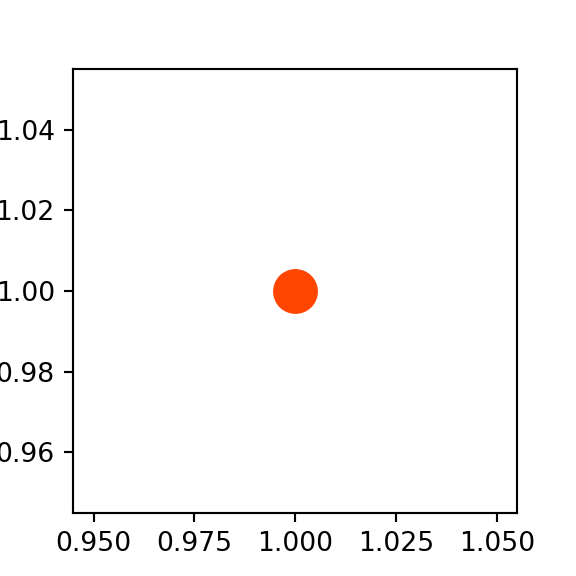
Модель OGC Simple Features
Геоинформатика I. Базы пространственных данных
Simple Features
Simple Features — стандарт OGC (2010), который определяет общую модель хранения и доступа к простым (векторным) объектам.
- все геометрии состоят из точек;
- все точки в геометрии имеют одинаковую размерность;
- размерность точек может быть 2, 3 или 4.
В дополнение к обязательным измерениям \(X\) и \(Y\) возможны:
- \(Z\), обозначающее высоту
- \(M\), обозначающее некоторую меру — например, время
Существует 4 варианта координат: \(XY\), \(XYZ\), \(XYM\) и \(XYZM\).
В географических координатах \(X\) — долгота, \(Y\) — широта.
Иерархия классов
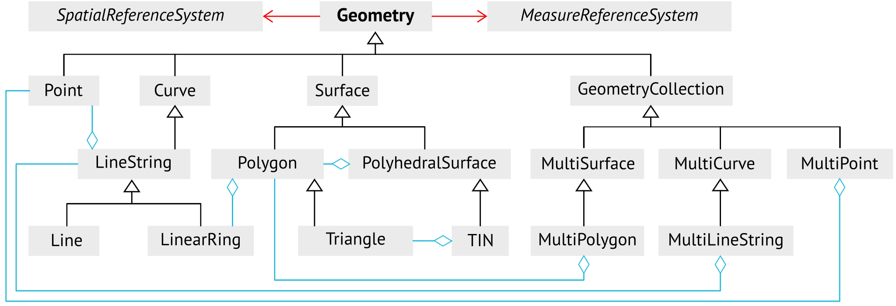
Модель Simple Features представляет собой иерархию классов, между которыми существуют отношения наследования (△) и коллекции (♢).
Geometry
Все объекты типа Simple Features наследуют свойства от базового класса GEOMETRY. Механизм этого наследования основан на следующих принципах:
GEOMETRYпредставляет собой абстрактный класс, т.е. вы не можете создать экземпляр этого класса.Все подклассы геометрий являются замыканиями, т.е. включают границу в множество точек.
На уровне класса
GEOMETRYопределен интерфейс — набор методов, которые позволяют получить информацию об объекте.Реализация интерфейса зависит от конкретного класса.
С каждым классом геометрии ассоциированы системы отсчета, которые определяют пространственные (\(XYZ\)) и дополнительные (\(M\)) измерения.
Интерфейс класса GEOMETRY
| Метод | Описание |
|---|---|
Dimension() |
Пространственная размерность данного геометрического объекта. Меньше или равна размерности координат. Для гетерогенных коллекций — максимальная размерность содержимых объектов. |
GeometryType() |
Имя подтипа класса GEOMETRY, экземпляром которого является данный объект. |
SRID() |
Идентификатор пространственной системы отсчета (SRS) данного объекта. Как правило, является внешним ключом к таблице систем отсчета. |
Интерфейс класса GEOMETRY
| Метод | Описание |
|---|---|
Envelope() |
Минимальный ограничивающий прямоугольник данного объекта, параллельный осям координат. Полигон, определяемый углами \((X_{min}, Y_{min})\), \((X_{min}, Y_{max})\), \((X_{max}, Y_{max})\), \((X_{max}, Y_{min})\), \((X_{min}, Y_{min})\). При этом в фактических реализациях достаточно указать минимумы и максимумы. |
AsText() |
Экспортирует данный геометрический объект в конкретное представление вида Well-Known Text (WKB) |
AsBinary() |
Экспортирует данный геометрический объект в конкретное представление вида Well-Known Binary (WKB) |
Интерфейс класса GEOMETRY
| Метод | Описание |
|---|---|
IsEmpty() |
Возвращает TRUE (\(1\)), если данный геометрический объект пуст, т.е. представляет пустое множество точек \(\varnothing\) в координатном пространстве; возвращает FALSE (\(0\)) в противном случае. |
IsSimple() |
Возвращает TRUE (\(1\)), если данный геометрический объект не содержит аномальных точек, таких как самопересечения и самокасания; возвращает FALSE (\(0\)) в противном случае. |
Интерфейс класса GEOMETRY
| Метод | Описание |
|---|---|
Is3D() |
Возвращает TRUE (\(1\)), если данный объект имеет координаты \(Z\). |
IsMeasured() |
Возвращает TRUE (\(1\)), если данный объект имеет координаты \(M\). |
Boundary() |
Возвращает замыкание комбинаторной границы данного объекта |
Важно
Названия методов в программных реализациях Simple Features могут отличаться от предлагаемых в стандарте. Однако наличие соответствующих методов является условием реализации стандарта.
Граница и замыкание
- Граничная точка
-
Точка, в любой окрестности которой находятся как принадлежащие, так и не принадлежащие множеству точки
- Граница множества \(\partial A\)
-
Совокупность граничных точек множества
- Замыкание множества \(\overline A\)
-
Объединение множества и его границы: \(\overline A = A \cup \partial A\)
- Дополнение множества \(A^-\), вложенного в \(\mathbb R^n\) (\(A \subset \mathbb R^n\))
-
Множество всех точек \(\mathbb R^n\), не являющихся элементами множества: \(A^- = \mathbb R^n \backslash A\)
- Внутренность множества (\(A^{\circ}\))
-
Объединение всех открытых подмножеств множества: \(A^\circ = \mathbb R^n \backslash \overline{A^-}\)
Топологическая граница
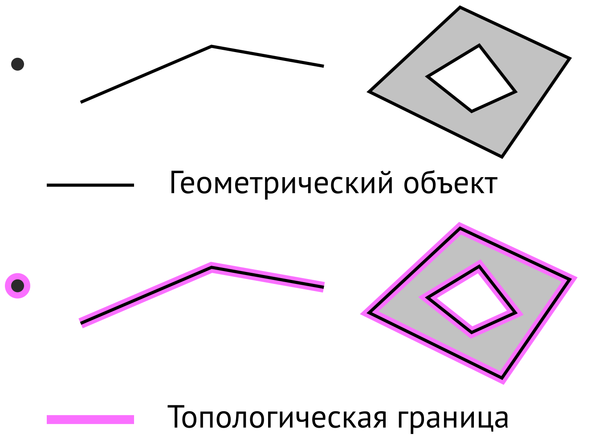
Симплекс
- Симплекс \(\Delta^n\)
-
Геометрическая фигура, являющаяся \(n\)-мерным обобщением треугольника
- Остов симплекса
-
Множество его вершин
- Грань симплекса размерности \(s\)
-
\(s\)-мерный симплекс, остов которого является подмножеством остова \(\Delta^n\).
Ребро — это грань размерности \(1\).
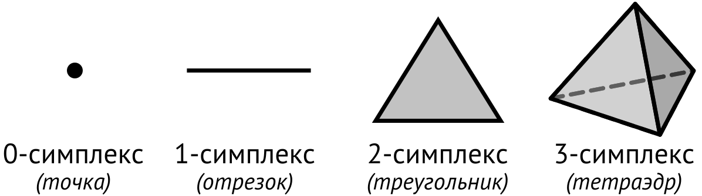
Комплекс
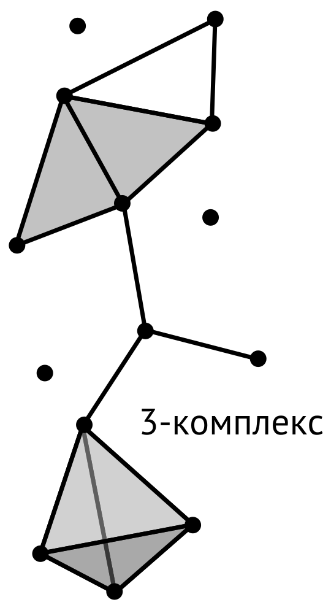
- Симплициальный комплекс \(\mathcal K\)
-
Множество симплексов, удовлетворяющее условиям:
- Все грани каждого симплекса из \(\mathcal K\) также принадлежат \(\mathcal K\)
- Непустое пересечение двух симплексов \(\sigma_1, \sigma_2 \in \mathcal K\) является гранью как \(\sigma_1\), так и \(\sigma_2\).
- Симплициальный \(n\)-комплекс \(\mathcal K\)
-
\(\mathcal K\), в котором наибольшее измерение какого-либо симлекса равно \(n\)
- Триангуляция
-
Разбиение геометрического объекта на симплексы
Комбинаторная граница
- Комбинаторная граница \(\partial \mathcal K\) \(n\)-комплекса \(\mathcal K\)
-
Множество \((n-1)\)-симплексов \(\mathcal K\), каждый из которых входит в состав только одного \(n\)-симплекса \(\mathcal K\).
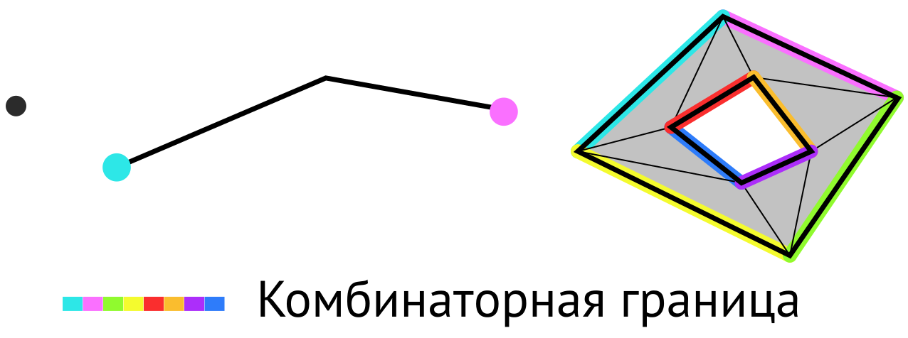
Граница Simple Features
Замыкание комбинаторной границы данного объекта
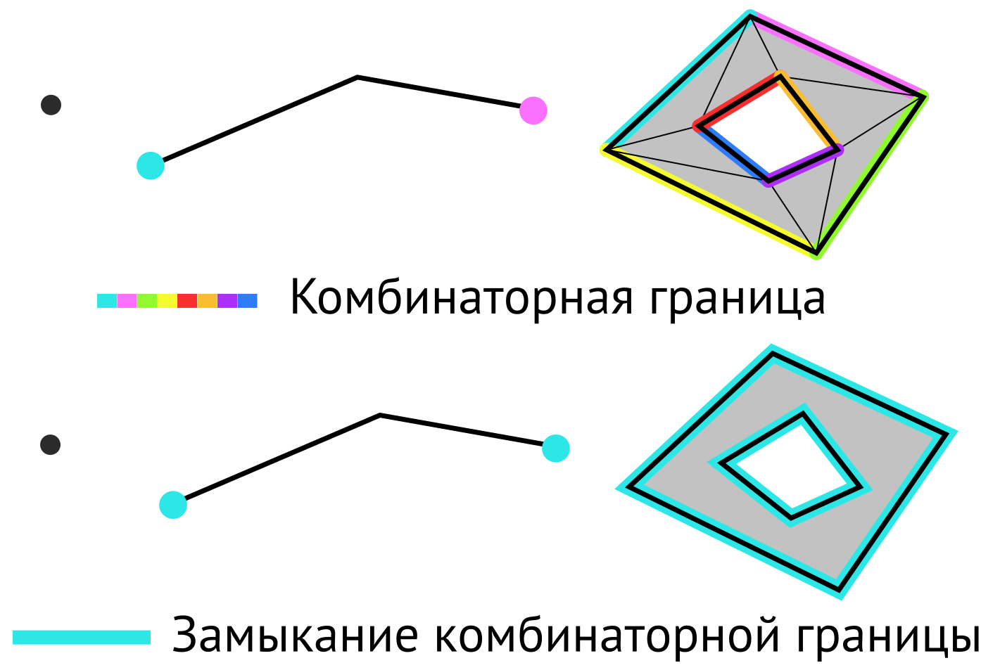
Геометрическая коллекция
GEOMETRYCOLLECTION — коллекция геометрических элементов
Единственное ограничение: все элементы коллекции должны иметь единую пространственную систему отсчета.
Подклассы могут накладывать дополнительные ограничения.
Порядок элементов коллекции не имеет значения.
Интерфейс должен поддерживать методы
NumGeometries()иGeometryN()
| Метод | Назначение |
|---|---|
NumGeometries() |
Возвращает количество геометрий в данной геометрической коллекции |
GeometryN(n) |
Возвращает \(n\)-ную геометрию в данной геометрической коллекции |
Точка (POINT)
POINT — \(0\)-мерный геометрический объект, единичное местоположение
Граница POINT — пустое множество: \(\partial A = \varnothing\)
Интерфейс точки должен поддерживать возвращение ее координат:
| Метод | Назначение |
|---|---|
X() |
Координата \(x\) данного объекта POINT |
Y() |
Координата \(y\) данного объекта POINT |
Z() |
Координата \(z\) данного объекта POINT, или NULL если не задано. |
M() |
Координата \(m\) данного объекта POINT, или NULL если не задано. |
Мультиточка (MULTIPOINT)
MULTIPOINT — \(0\)-мерная геометрическая коллекция объектов класса POINT.
Элементы коллекции не связаны и не имеют какого-либо смыслового упорядочения (наследуется свойство
GEOMETRYCOLLECTION).Граница
MULTIPOINT— пустое множество: \(\partial A = \varnothing\).Объект
MULTIPOINTявляется простым, если ни одна параPOINTв его коллекции не совпадает.
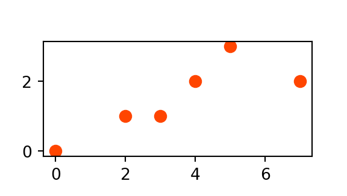
flowchart LR A(MULTIPOINT) -->|"GeometryN( 0 )"| B(POINT) B -->|"X( )"| C(X) B -->|"Y( )"| D(Y)
Кривая (CURVE)
CURVE — одномерный геометрический объект, хранимый в виде последовательности точек.
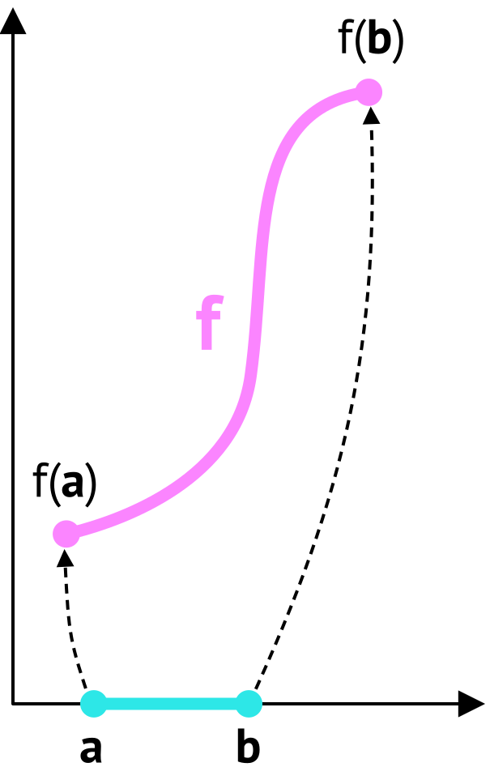
Кривая определяется как непрерывное отображение отрезка в пространство:
\[f: [a, b] \rightarrow R^n\]
Это абстрактный класс, вы не можете создать объект
CURVE.Интерполяция между точками определяется конкретным подклассом
CURVE.Стандарт определяет только подкласс
LINESTRING, в котором используется линейная интерполяция.
Кривая (CURVE)
- Кривая является простой, если она не проходит дважды через одну и ту же точку, за исключением начальной и конечной точки:
\[ \texttt{f.IsSimple()} \Leftrightarrow \boxed{f(t_1)=f(t_2) \land t_1 \neq t_2 \color{red}{\Rightarrow} t_1 = a \land t_2 = b} \]
Кривая является замкнутой, если ее начальная точка равна конечной точке:
\[ \texttt{f.IsClosed()} \Leftrightarrow \boxed{f(a)=f(b)} \]
Граница замкнутой кривой является пустым множеством:
\[ \texttt{f.IsClosed()} \Leftrightarrow \boxed{\partial f=\varnothing} \]
Кривая (CURVE)
Граница незамкнутой кривой содержит ее конечные точки:
\[ \texttt{!f.IsClosed()} \Leftrightarrow \boxed{\partial f=\{f(a), f(b)\}} \]
Простая и замкнутая кривая является кольцом (
RING).Интерфейс объекта
CURVEвключает следующие методы:
| Метод | Назначение |
|---|---|
Length() |
Длина данного объекта CURVE в ассоциированной СК |
StartPoint() |
Начальная точка данного объекта CURVE |
EndPoint() |
Конечная точка данного объекта CURVE |
IsClosed() |
TRUE, если StartPoint() == EndPoint() |
IsRing() |
TRUE, если IsSimple() и StartPoint() == EndPoint() |
Линия (LINESTRING, LINE, LINEARRING)
LINESTRING — это CURVE с линейной интерполяцией между точками.
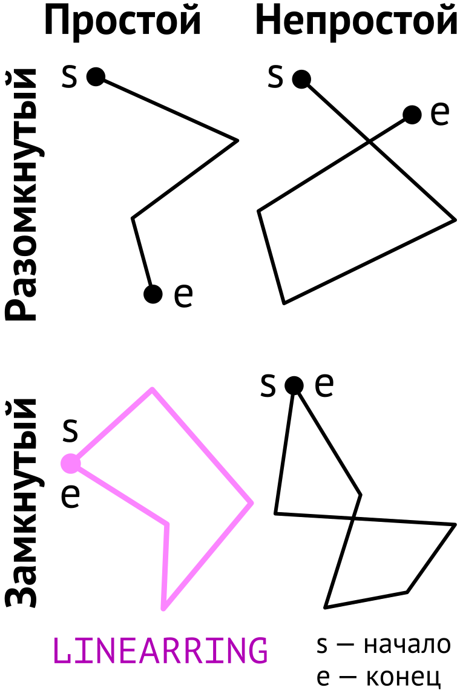
Каждая пара последовательных точек определяет отрезок
LINE— этоLINESTRINGиз двух точекLINEARRING— это простой замкнутыйLINESTRINGИнтерфейс содержит дополнительные методы:
| Метод | Назначение |
|---|---|
NumPoints() |
Количество точек в данном объекте LINESTRING |
PointN(n) |
\(n\)-я точка данного объекта LINESTRING |
Мультикривая (MULTICURVE)
MULTICURVE представляет 1-мерный подкласс GEOMETRYCOLLECTION — коллекцию объектов CURVE.
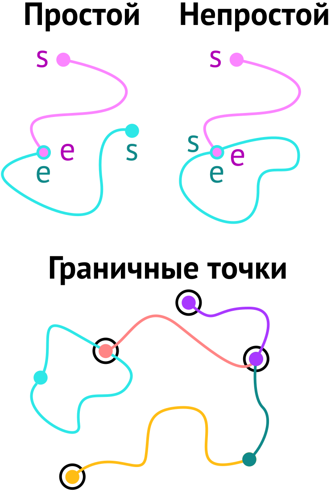
MULTICURVEкак иCURVEявляется абстрактным классом. Вы не можете создать объект данного класса.MULTICURVEявляется простым, если каждый его элемент является простым, а их пересечения происходят только в граничных точках.Точка принадлежит границе объекта
MULTICURVEесли она принадлежит границам нечетного числа его элементов.Объект
MULTICURVEзамкнут, если замкнуты всего его элементы.Граница замкнутого объекта
MULTICURVEвсегда пуста.
Мультикривая (MULTICURVE)
MULTICURVE представляет 1-мерный подкласс GEOMETRYCOLLECTION — коллекцию объектов CURVE.
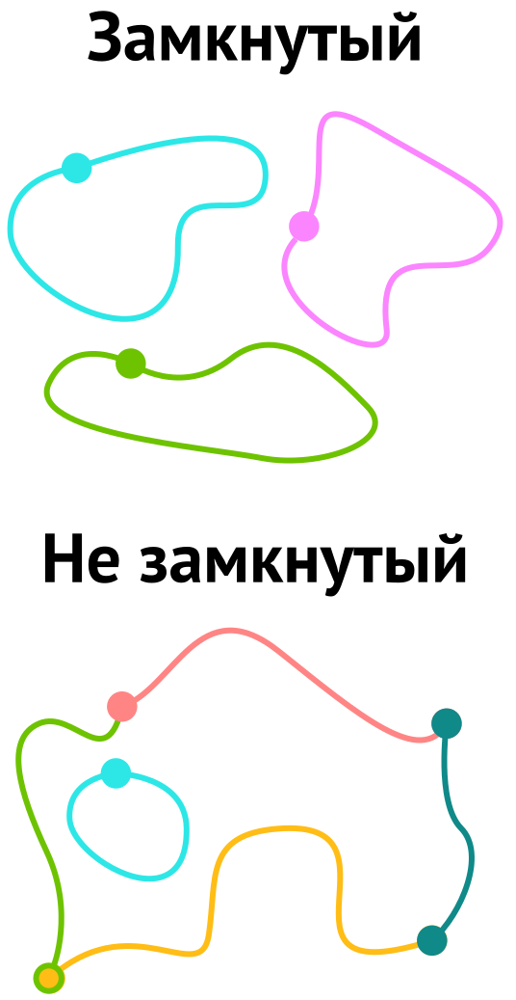
Интерфейс MULTICURVE дополнительно к GEOMETRYCOLLECTION реализует следующие методы:
| Метод | Назначение |
|---|---|
IsClosed() |
TRUE (\(1\)) если данный объект MULTICURVE является замкнутым (т.е. каждый объект CURVE в коллекции является замкнутым. Возвращает FALSE (\(0\)) в противном случае |
Length() |
Длина данного объекта MULTICURVE, которая равна сумме длин элементов коллекции. |
Мультилиния (MULTILINESTRING)
MULTILINESTRING — это MULTICURVE с элементами класса LINESTRING.
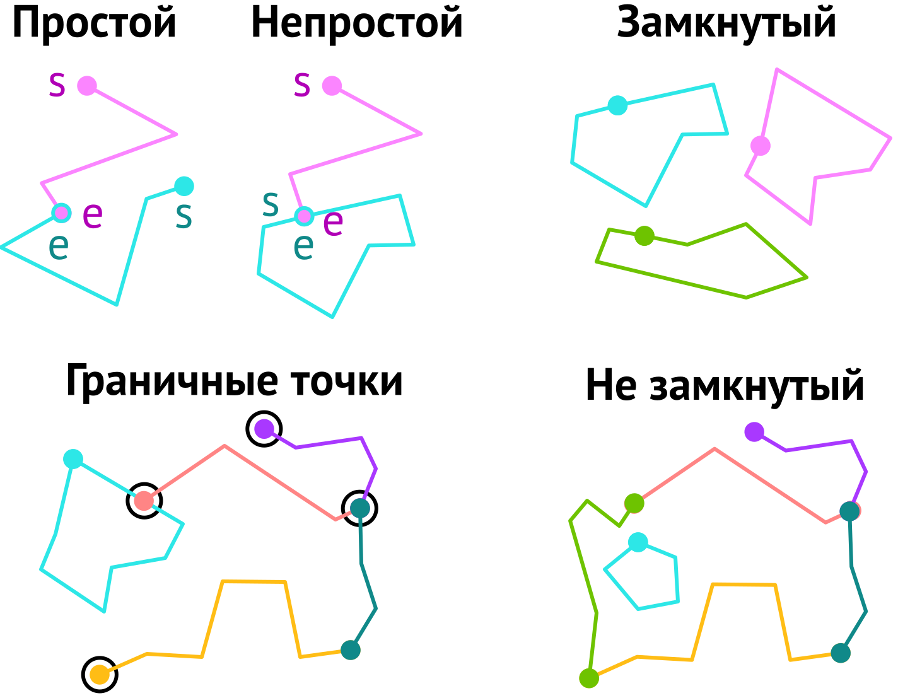
Поверхность (SURFACE)
SURFACE — это \(2\)-мерный геометрический объект.
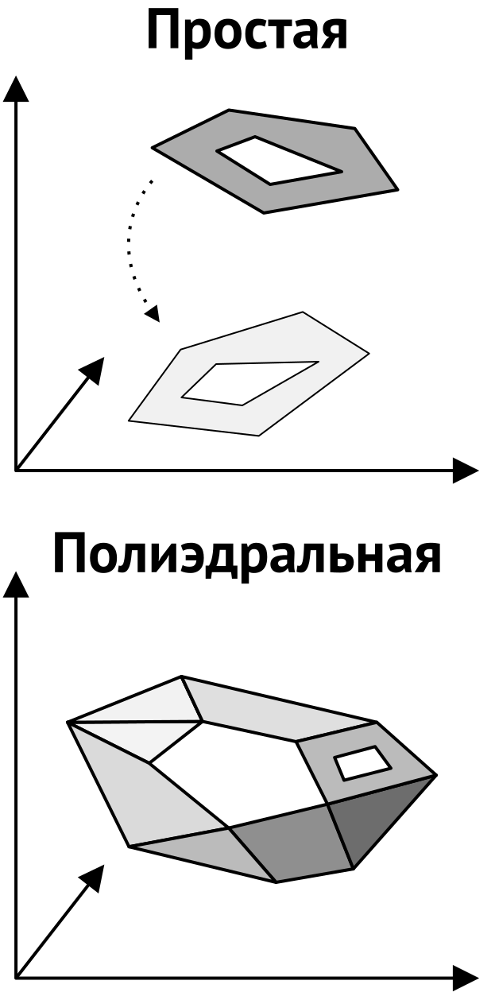
Простая поверхность состоит из единичной области (“patch”), которая соответствует одной внешней границе, а также \(0\) и более внутренних границ.
Простая поверхность в 3-мерном пространстве изоморфна планарной поверхности с точностью до поворота на плоскость \(z = 0\).
Полиэдральная поверхность формируется “склеиванием” простых поверхностей по общим границам (полиэдр — объединение многогранников).
Если нормали всех компонент полиэдральной поверхности параллельны, то она может быть представлена в виде простой поверхности.
Поверхность (SURFACE)
SURFACE— это абстрактный класс, вы не можете создать объект этого класса.Граница объекта
SURFACE— это множество объектов классаCURVE, соответствующих его внешней и (опционально) внутренним границам.Интерфейс класса имеет дополнительные методы:
| Метод | Назначение |
|---|---|
Area() |
Площадь данного объекта SURFACE в его системе координат |
Centroid() |
Математический центроид данного объекта SURFACE как объект класса POINT. Может находиться за пределами объекта. |
PointOnSurface() |
Объект класса POINT, который гарантированно принадлежит данному объекту SURFACE. |
Полигон (POLYGON) и треугольник (TRIANGLE)
POLYGON — плоская поверхность с одной внешней и 0+ внутренних границ
Границы
POLYGONимеют классLINEARRING.Внешняя граница против часовой стрелки, внутренние — по часовой.
TRIANGLE— этоPOLYGONиз 3 различных, неколлинеарных точек.
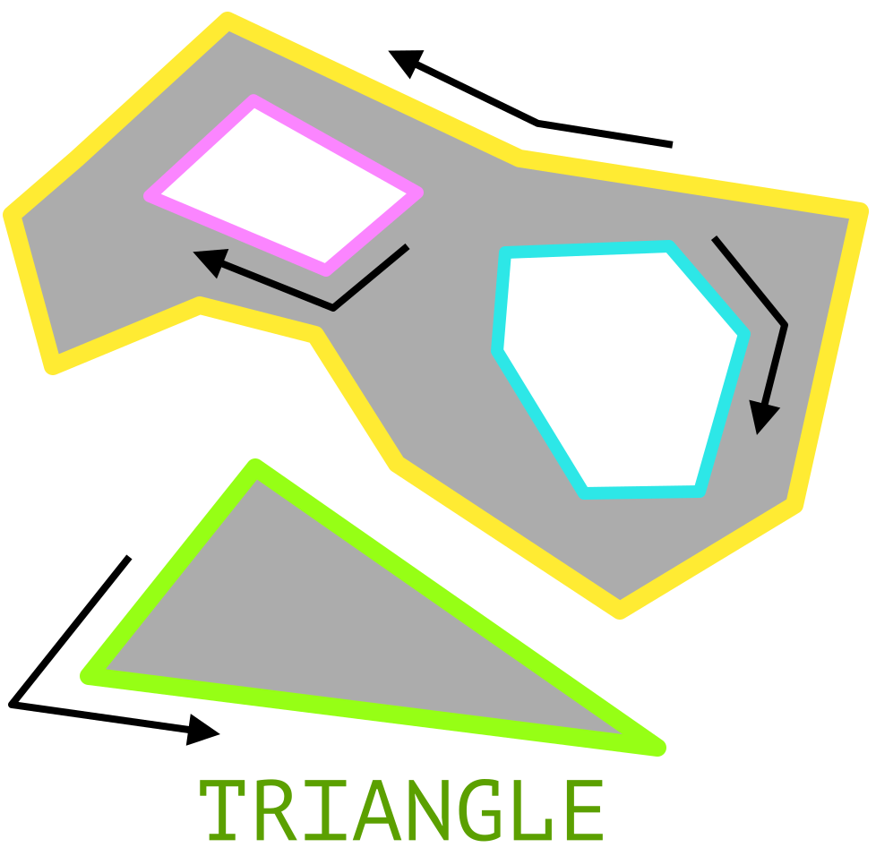
| Метод | Назначение |
|---|---|
ExtriorRing() |
Внешнее кольцо данного POLYGON в виде LINESTRING |
NumInteriorRing() |
Количество внутренних колец данного POLYGON |
InteriorRingN(n) |
\(n\)-ное внутреннее кольцо данного POLYGON в виде LINESTRING |
Полигон (POLYGON)
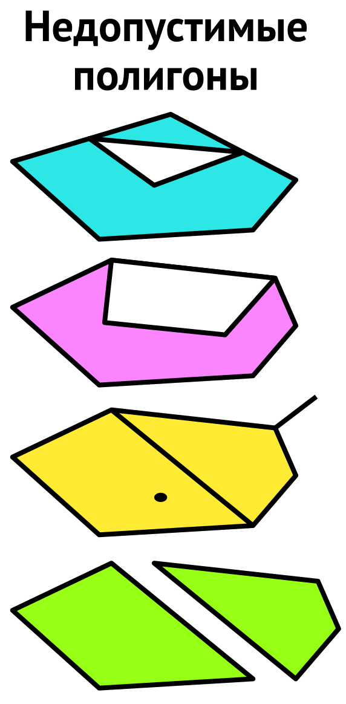
Дополнительные проверки:
Внутренняя область полигона \(P^\circ\) — линейно связное множество.
Внешняя область полигона \(P^-\) с 1 и более дырок — линейно несвязное множество.
Границы полигона не могут перекрываться, а их пересечение возможно только в форме касания в точке.
Полигон не может иметь линий разреза, шипов и проколов. Формально это означает, что полигон совпадает с замыканием его внутренней области: \(P = \overline{P^\circ}\).
POLYHEDRALSURFACE и TIN
POLYHEDRALSURFACE — коллекция полигонов, которые имеют общие границы.
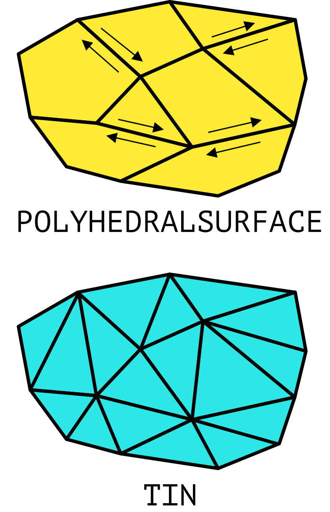
Для каждой пары касающихся полигонов их общая граница должна быть представима в виде коллекции объектов
LINESTRING.Каждый такой
LINESTRINGдолжен входить в состав не более чем \(2\)-х полигонов.Направление обхода контура у всех граней
POLYHEDRALSURFACEдолжно быть одинаковым. Два соседних полигона проходят общую границу в противоположных направлениях.TIN(Triangular Irregular Network) — этоPOLYHEDRALSURFACE, который состоит из объектов классаTRIANGLE.
POLYHEDRALSURFACE и TIN
Интерфейс POLYHEDRALSURFACE дополнительно поддерживает следующие методы:
| Метод | Назначение |
|---|---|
NumPatches() |
Количество полигонов данного объекта POLYHEDRALSURFACE |
PatchN(n) |
\(n\)-ный полигон данного объекта POLYHEDRALSURFACE в виде объекта POLYGON |
BoundingPolygons(p) |
Коллекция полигонов, которые граничат с p в данном объекте POLYHEDRALSURFACE в виде объекта MULTIPOLYGON. |
IsClosed() |
TRUE, если поверхность замкнута сама на себя, т.е. не имеет границы и оконтуривает сплошное тело. |
Мультиповерхность (MULTISURFACE)
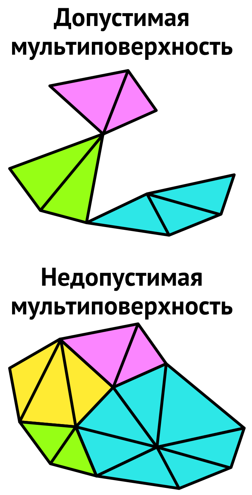
MULTISURFACE — 2-мерный объект класса GEOMETRYCOLLECTION, элементами которого являются объекты класса SURFACE.
Внутренние области любых двух поверхностей в коллекции не могут пересекаться.
Границы любых двух поверхностей в коллекции могут пересекаться только в конечном числе точек.
В случае касания вдоль кривой поверхности могут быть объединены.
Дополнительные методы аналогичны методам
SURFACE.
Мультиполигон (MULTIPOLYGON)
MULTIPOLYGON — это объект класса MULTISURFACE, элементы которого являются объектами класса POLYGON.
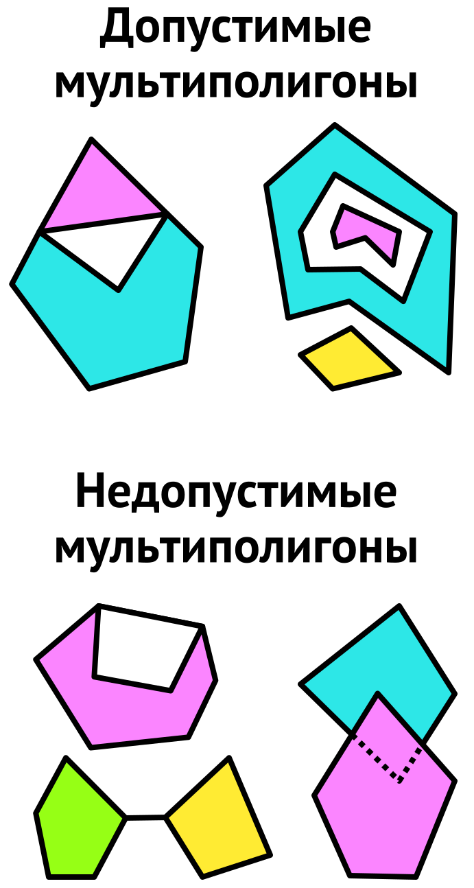
MULTIPOLYGONнаследует все ограничения, действующие для объектов классовMULTISURFACEиPOLYGON.Внутренняя область объекта
MULTIPOLYGON, включающего 2 и более полигонов, не является линейно связной. Количество компонент = количество полигонов.Границей объекта
MULTIPOLYGONявляется множество замкнутых объектовLINESTRING, соответствующих границам вложенных объектовPOLYGON.POLYHEDRALSURFACEне является мультиполигоном, т.к. может нарушать правило касания в конечном числе точек.
Иерархия классов
Модель Simple Features представляет собой иерархию классов, между которыми существуют отношения наследования (△) и коллекции (♢).
Библиография
OGC. 2010. «OpenGIS® Implementation Standard for Geographic information - Simple feature access - Part 1: Common architecture». Open Geospatial Consortium. https://www.ogc.org/standards/sfa.